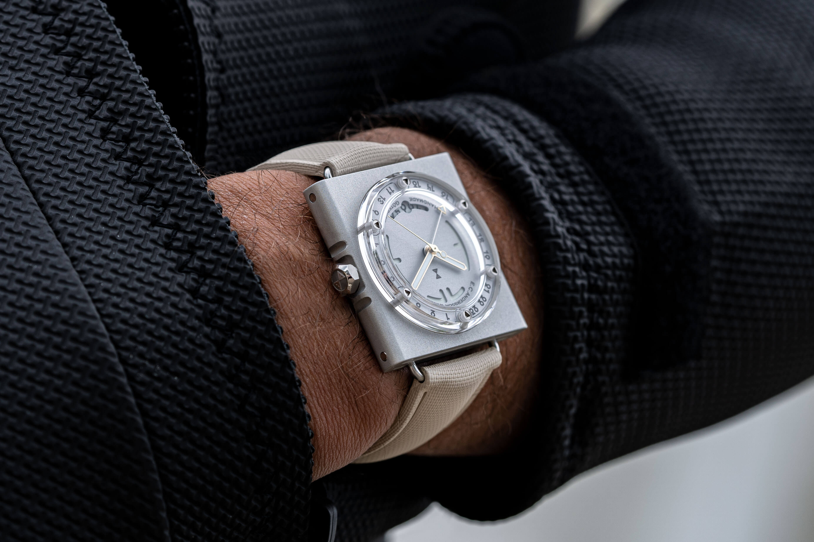
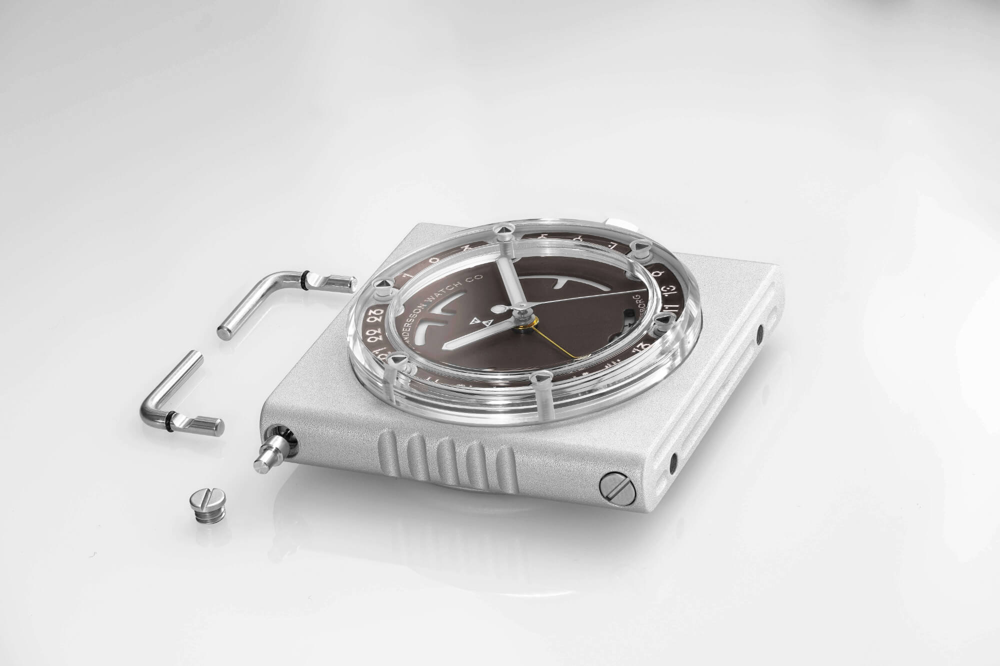
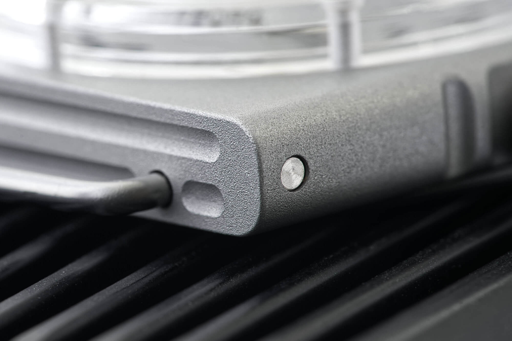
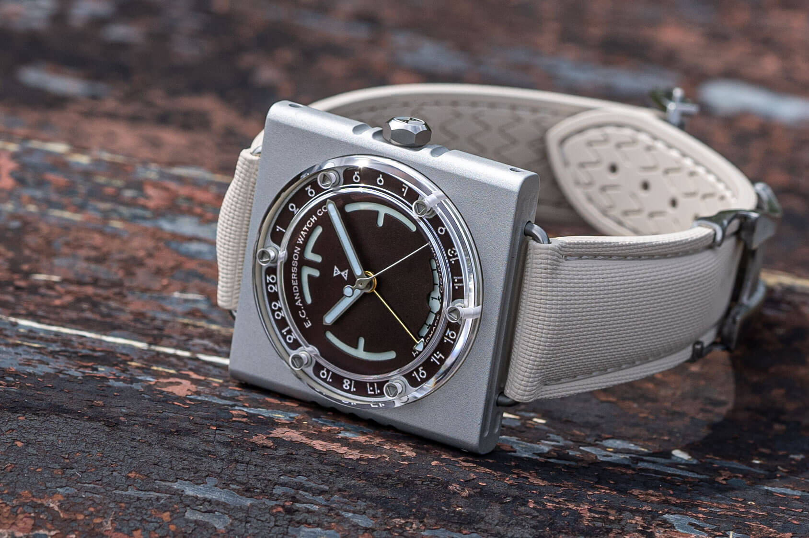

The E.C. Andersson Timepod Lets You Pull the Lugs Straight Out of the Case
I was listening to the Worn & Wound podcast the other day, the September new releases episode, and one watch made me hit rewind. The Timepod by E.C. Andersson. I had to go check it out, and wow, how cool is this thing. The lugs come off the case with a press of a button.
 Nenad Pantelic • October 5, 2026
Nenad Pantelic • October 5, 2026

If you want to hear it yourself, the episode is September New Releases in Review. E.C. Andersson is a small watchmaker from Gothenburg, Sweden, and the Timepod is the newest watch in their retrofuturistic collection. They call it their most ambitious project to date.
It is made in-house, by hand. The case starts as a block of metal and goes through milling, lathing, bead blasting, hardening and engraving in their own workshop, followed by regulating, assembly and testing, one watch at a time. It comes in Burnt Umber and Bare Metal, and right now you get one through a waitlist.
How the lugs come off
The Timepod skips traditional lugs and uses something I can best describe as wire lugs. Each side of the watch has two symmetrical L-shaped lug elements that detach from the case with a press of a button. Pull them straight out, change the strap, push the lugs back in, done. The mechanism locks itself once the lugs are seated, so they are fully secure.
It kinda reminds me of the system on some Panerai Radiomir watches. E.C. Andersson took the idea a few steps further, though. This is a complex system with tight tolerances, built with durability and longevity in mind. The brand says the mechanism is designed to keep dirt out, and you can still open it up for maintenance yourself without risking damage to other parts of the watch.

Look at the watch straight on. On the left side of the case there are two slotted screws. Across the case from each screw sits a button. Between each screw and its button runs a proprietary milled bar, in the spot where you would normally find a spring bar.
The screws are for maintenance. According to the Timepod manual, you unscrew one, let the piston and the button slide out, then clean the cavity with a small pipe brush, compressed air, water or isopropanol. After a swim in salt water, they also tell you to pull the lugs and rinse the cavities with fresh water. And keep one line from the manual in mind: there is a loose spring inside. It comes back at the end.

Specs
For strap people, the number to check is the lug bar. It is 1.8mm thick, and lug width tops out at 22mm. The full spec sheet:
| Brand | E.C. Andersson |
| Case | 39 x 39mm |
| Lug-to-lug | 46.6mm |
| Thickness | 11.2mm including the sapphire (case alone is 6.4mm) |
| Lug width x lug bar diameter | Max 22mm x 1.8mm |
| Attachment | Proprietary lug-release system, push-button |
| Strap | Rubber with sailcloth pattern, deployant clasp, tucked end |
| Crystal | Proprietary sapphire, held on with six screws |
| Movement | Automatic, Miyota 9075 based, GMT, luminous date |
| Accuracy | -1/+6 s/day at the time of shipment |
| Water resistance | 70m, screw-down crown |
| Colors | Burnt Umber, Bare Metal |
| Availability | Waitlist |
The sapphire crystal is another little project of its own. It wraps over the dial and hands, it is bevelled and AR-coated on the inside, and six individual screws hold it to the case.

Final thoughts
This is super cool. What I like most is how secure it is. Your watch does not depend on a spring bar to stay on the strap. And we all know that spring bars fail sometimes.
I also like that you can run more or less any strap width on it, let's say anything from 19mm to 22mm. With regular lugs, a narrower strap leaves a gap on the sides, so you see a bit of bare spring bar next to a strap that doesn't fill the space between the lugs. The Timepod can't be understrapped that way. You put the strap on the wire lugs, center it, and that's it. It looks just right. That opens up so many more strap options, and I love it.
The push-button release also looks user friendly. You can change straps without any special tools. From the photos, it almost looks like a toothpick would do the job.
One piece of advice: do your strap changes in a room without a thick carpet. If one of those small screws or springs drops, and eventually one will, you will never find it again 🤷♂️